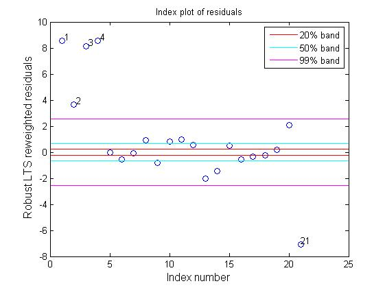
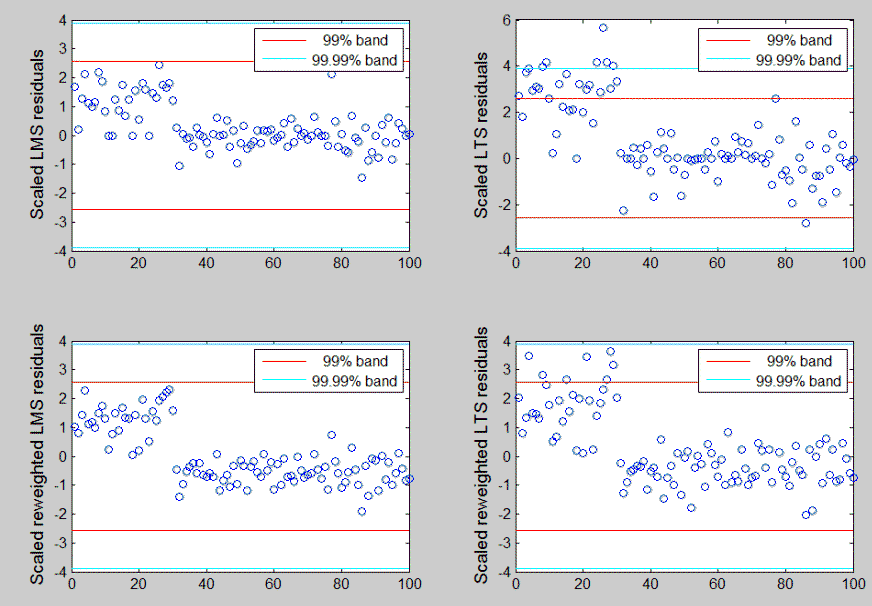
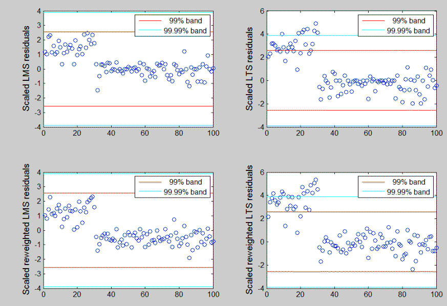
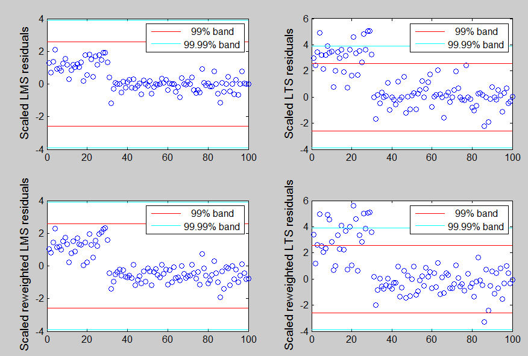
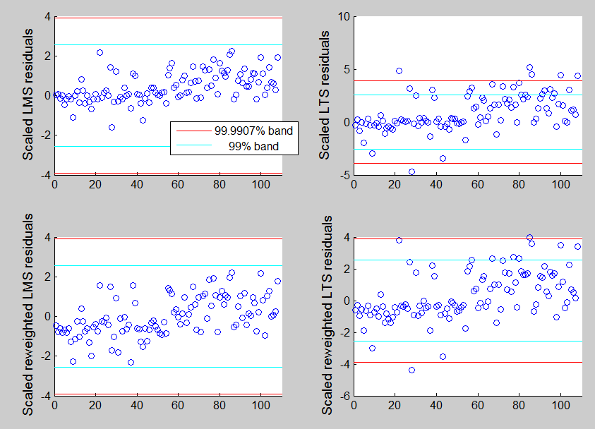

| Flexible Statistics Data Analysis Toolbox™ |
|
Plots the residuals against index number.
resindexplot(residuals)
resindexplot(residuals,param1,val1,param2,val2,...)
resindexplot(residuals) plots the residuals against index number. The input argument of this function may be conveniently produced by function LXS, Sreg or MMreg.
|
Note It is worthwhile to remark the difference between function resfwdplot from function resindexplot. The former shows a 'movie' of the residuals, i.e. it enables to show how the residuals for each unit evolve as the subset size increases. The latter shows the static plot of the residuals against the index number or fitted value or against any other statistic. Remark Only one resindexplot figure at a time can be left open. |
resindexplot(residuals) needs as input a vector of residuals or a structure containing fields residuals, y and X.
resindexplot(residuals,param1,val1,param2,val2,...) specifies one or more of the name/value pairs described in the following table.
| Parameter | Value |
|---|---|
| 'x' |
The vector to be plotted on the x-axis. As default the sequence 1:length(residuals) will be used. |
| 'h' |
the axis handle of a figure where to send the resindexplot. This can be used to host the resindexplot in a subplot of a complex figure formed by different panels (e.g. a panel with residuals from a classical ols estimator and another with residuals from a robust regression: see example below). |
| 'labx' |
A label for the x-axis (default: 'Subset size m') |
| 'laby' |
A label for the y-axis (default: ''). |
| 'titl' |
A label containing the title of the plot. Default value is 'Index plot of residuals' |
| 'numlab' |
Number of points to be identified in plots. If numlab is equal a cell containing scalar k, the units with the k largest residuals are labeled in the plots. If numlab is a vector, the units inside the vector are labeled in the plot. For no labeling leave it empty. The default value of numlab is {5} that is units with the 5 largest residuals are labelled. |
| 'conflev' |
Confidence interval for the horizontal bands. Remark: confidence interval is based on the chi^2 distribution. It can be a vector of different confidence level values, e.g. [0.95,0.99]. |
| 'FontSize' |
Scalar which controls the font size of the labels of the axes. Default value is 12. |
| 'SizeAxesNum' |
Scalar which controls the size of the numbers of the axes. Default value is 10. |
| 'xlimx' |
Vector with two elements which controls minimum and maximum value of the x axis. Default is ' ', automatic scale. |
| 'ylimy' |
Vector with two elements which controls minimum and maximum value of the y axis. Default is ' ', automatic scale. |
| 'lwdenv' |
Scalar which controls the width of the lines associated with the envelopes. Default is lwdenv=1 |
| 'MarkerSize' |
A scalar specifying the size of the marker in points. The default value for MarkerSize is 6 points (1 point = 1/72 inch). |
| 'MarkerFaceColor' |
The fill color for markers that are closed shapes (circle, square, diamond, pentagram, hexagram, and the four triangles). |
| 'databrush' |
Empty value scalar or structure. If databrush='' (default) brushing is not enabled else if it is a scalar it is possible to brush the points with the mouse using all default options. The core of this option is selectdataFS, a function used by all graphic tools of the FSDA toolbox. A separate common page details all options of structure databrush. |
Plot of the robust residuals for the stack loss data. Note that with a mouse click on the legends text it is possible to show/hide the corresponding confidence bands in the plot (resindexplot makes use of ClickableMultiLegend).
load('stack_loss.txt');
y=stack_loss(:,4);
X=stack_loss(:,1:3);
[out]=LXS(y,X,'nsamp',0,'rew',1,'lms',0);
resindexplot(out.residuals,'labx','Index number',...
'laby','Robust LTS reweighted residuals',...
'conflev',[0.2,0.5,0.99]);

n=100;
p=10;
state=1;
randn('state', state);
X=randn(n,p);
y=randn(n,1);
% Level shift to the first 30 units
y(1:30)=y(1:30)+5;
The application of the traditional robust methods (LMS and LTS) of outlier detection gives the following results.
% Define number of subsamples nsamp=10000; % Define confidence level conflev=[0.99 1-0.01/100]; % Leave blank the title of the plots titl=''; % LMS with no rewighting [outLMS]=LXS(y,X,'nsamp',nsamp,'conflev',conflev(1)); h1=subplot(2,2,1); laby='Scaled LMS residuals'; resindexplot(outLMS.residuals,'h',h1,'title',titl,'laby',laby,'numlab','','conflev',conflev) % LTS with no rewighting h2=subplot(2,2,2); [outLTS]=LXS(y,X,'nsamp',nsamp,'conflev',conflev(1),'lms',0); laby='Scaled LTS residuals'; resindexplot(outLTS.residuals,'h',h2,'title',titl,'laby',laby,'numlab','','conflev',conflev); % LMS with reweighting [outLMSr]=LXS(y,X,'nsamp',nsamp,'conflev',conflev(1),'rew',1); h3=subplot(2,2,3); laby='Scaled reweighted LMS residuals'; resindexplot(outLMSr.residuals,'h',h3,'title',titl,'laby',laby,'numlab','','conflev',conflev) % LTS with reweighting [outLTSr]=LXS(y,X,'nsamp',nsamp,'conflev',conflev(1),'rew',1,'lms',0); h4=subplot(2,2,4); laby='Scaled reweighted LTS residuals'; resindexplot(outLTSr.residuals,'h',h4,'title',titl,'laby',laby,'numlab','','conflev',conflev);
Given that in this case the number of subsamples is extremely large we run the procedure 3 times. In the three figures which follow it is possible to notice that the proposed solution varies considerably according to the local minimum which is found. However, LMS if we consider a Bonferroni confidence level never detects outliers. On the other hand the number of units declared as outliers in the LTS context varies considerably.


You can compare the information which comes from the previous plots with the output with that which comes out from monitoring the minimum deletion residual mdrplot.
In this third example we use the Hospital dataset. For a description and the analysis of these data using the minimum deletion residual, see page mdrplot
.As before we use 1% individual and simultaneous confidence bands
load('hospital.txt');
y1=hospital(:,5);
X=hospital(:,1:4);
% Define nominal confidence level
conflev=[0.99 1-0.01/length(y1)];
% Define number of subsets
nsamp=10000;
% Define the main title of the plots
titl='';
% LMS with no rewighting
[outLMS]=LXS(y1,X,'nsamp',nsamp,'conflev',conflev(1));
h1=subplot(2,2,1);
laby='Scaled LMS residuals';
resindexplot(outLMS.residuals,'h',h1,'title',titl,'laby',laby,'numlab','','conflev',conflev,'xlimx',[0 110])
% LTS with no rewighting
h2=subplot(2,2,2);
[outLTS]=LXS(y1,X,'nsamp',nsamp,'conflev',conflev(1),'lms',0);
laby='Scaled LTS residuals';
resindexplot(outLTS.residuals,'h',h2,'title',titl,'laby',laby,'numlab','','conflev',conflev,'xlimx',[0 110]);
% LMS with reweighting
[outLMSr]=LXS(y1,X,'nsamp',nsamp,'conflev',conflev(1),'rew',1);
h3=subplot(2,2,3);
laby='Scaled reweighted LMS residuals';
resindexplot(outLMSr.residuals,'h',h3,'title',titl,'laby',laby,'numlab','','conflev',conflev,'xlimx',[0 110])
% LTS with reweighting
[outLTSr]=LXS(y1,X,'nsamp',nsamp,'conflev',conflev(1),'rew',1,'lms',0);
h4=subplot(2,2,4);
laby='Scaled reweighted LTS residuals';
resindexplot(outLTSr.residuals,'h',h4,'title',titl,'laby',laby,'numlab','','conflev',conflev,'xlimx',[0 110]);

|
|
resfwdplot.html | restreigen.html |
|